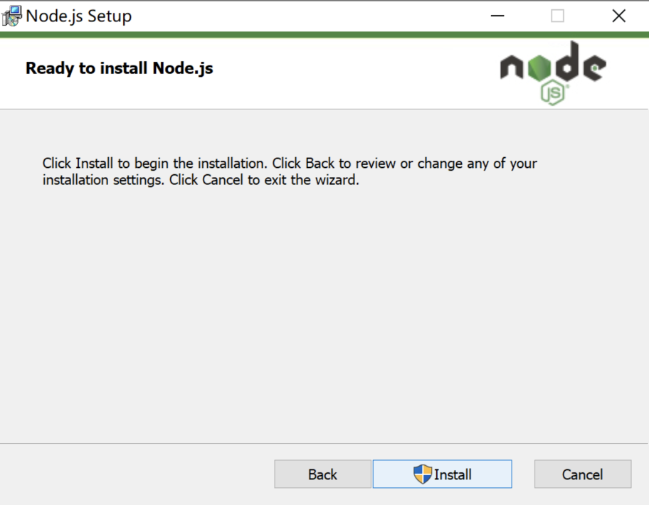
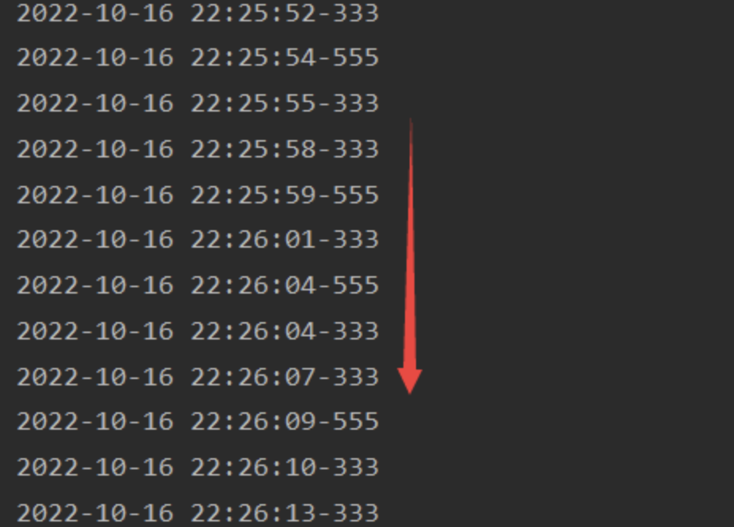

二十七、JS逆向01
一、浏览器js调试功能说明
1、调试工具栏按钮说明
按钮：
- 第一个按钮
调试工具栏第一个按钮. 表示, 直接运行到最后, 或者下一个断点位置.
- 第二个按钮
表示, 执行当前行代码. 不论当前行是否有函数调用. 都会执行完
- 第三个按钮
表示, 进入下一步. 如果有函数掉用, 会进入函数, 如果没有, 就是下一行
- 第四个按钮
表示, 进入回到上一步（但是不好用）
- 最后一个按钮
所有断点都不生效
2、右侧调试面板说明
- 英文面板

- 中文面板
(1) Watch/监视 说明
作用： 监视当前的变量 通过观察变量在执行过程中的变化
- 输入要监视的变量 h
- 输入完回车
- 点击 第二个按钮向下执行一步 通过代码不断向下运行以达到监视变量的目的
(2) Breakpoints/断点
作用： 所有的断点都会再次显示
- 点击查看

- 移除当前/所有断点

(3) scope/作用域
作用： 查看当前作用域的变量

(4) Call Stack/调用堆栈
作用： 用于查看当前的调用顺序 以此进行查看当前每一步的调用流程
- 当前位置

- 查看谁调用了d函数

(5) XHR/提取断点
作用： 当前请求中有异步的都会被阻断(也就是添加上断点)
- 勾选

- 拦截指定的url

3、浏览器配置

二、找加密参数方案
URL： https://music.163.com/#/song?id=188451
1、从请求发出处进行查找
说明：
这种方式查找起来比较方便
- 通过抓包找到当前url 携带参数为加密参数
- 查看当前响应 返回为当前音频的URL地址
- 进入调用栈 找到最后一个调用， 一定为当前最终调用的send()方法 也就是发送出去的那个 点击进去
- 点击调用栈进入以后 发现到了当前位置 打上断点
接下来不断向上进行查找 直到找到加密位置
- 发现加密的值 在arguments 接下来逐步查找 是在哪一步将参数进行了加密
- 在调用栈的位置 逐步向上一层调用的位置进行查找
- 进入 上一层 依然为加密后的

- 进入 上一层 依然为加密后的 继续上一层
- 进入 上一层 依然为加密后的 继续上一层
- 进入 上一层 依然为加密后的 继续上一层
- 到第6层发现了参数不再是加密的 u7n.be8W，进入到当前函数查看内部是如何加密的
- 点击进入

- 进入u7n.be8W函数以后 找到了当前携带参数的位置
- 通过查看发现当前加密对象为bVc6W，接下来进入到window.asrsea函数 查看是如何进行加密的
- 点击进入
- 找到最终加密函数d
2、搜索当前URL
说明：
搜索规则 当前url路径从后往前逐一去搜
方式：
- 比如：当前url 为 https://music.163.com/weapi/song/enhance/player/url/v1?csrf_token=
我们可以尝试搜索：
- v1
- url/v1
- player/url/v
- enhance/player/url/v1
等方式，如果搜索出来的结果太多，可以尝试不断往前添加路径继续搜索
- 搜索url中 enhance/player/url/v1
- 在search中搜索出结果 点击进入查看
- 通过搜索到得结果 进入到代码中 给当前位置打上断点 查看当前代码
- 发现函数 u7n.be8W 内部有俩个参数，第一个为当前我们搜索的URL 进入该函数查看
- 点击进入
- 找到加密函数位置
3、直接搜索加密参数名称
说明：
当前这种方式可能会有很多当前相同名字的代码的位置 需要自己逐一去排查
根据提示的位置，下断点 让程序执行
- 通过抓包找到当前url 发现当前携带参数key为 params 和 encSecKey
- 进行搜索
首先搜搜 params 发现结果过多 不好排查
- 换 下一个参数encSecKey 继续搜索
- 找到当前加密位置
- 给当前加密函数打上断点 然后重新运行当前网站 通过右侧调用栈查找去查看当前调用的流程
- 通过调用栈进行长层查看

4、参数为请求头中参数
URL：https://www.jiansheku.com/search/business/p4/
- 当前sign为请求头中参数名称

- 如果当前加密参数为请求头中参数 只搜索参数名无法搜索到或者搜索的结果太多

- 可以尝试搜索
headers.参数名

5、在断点处想进入函数的方式
方式一 ： 选中函数
- 选中函数 通过弹出框进行进入
方式二 ：使用console输出函数
- 把函数复制到console中 运行 通过输出结果点击进入
- 进入到当前函数定义处的位置
方式三 ：调试工具栏 第三个按钮
可以点击调试工具栏, 第三个按钮. 可以进入函数. 但是. 如果在本次调用过程中, 掺杂了其他函数、可能会有误差.
- 实例

- 结果

三、pycharm 运行js
(1) 要求专业版
windwos：根据公告进行破解， 需要版本和视频对应
Mac：淘宝或者拼多多
(2) 电脑安装node环境
作用： 用于解释pycharm中的js文件的代码， 可以理解为和Python解释器一样
node安装包： npm install 包名
-
搜索nodejs 官网
-
https://nodejs.org/zh-cn

-
版本
-
windwos： 点击其它下载 选择 后缀为msi的，直接傻瓜式安装就可以
- Mac： 直接下载 安装即可

- 安装完以后 打开终端输入 node 查看安装是否成功

- 安装步骤





-
将npm设置为国内的镜像
-
windwos
-
在国内使用npm下载包速度比较慢，可以将npm设置为国内的镜像，以加快下载速度。
以下是将npm设置为淘宝镜像的步骤：
-
打开终端或命令行窗口
-
输入以下命令，将npm的registry设置为淘宝镜像：
cpp npm config set registry https://registry.npm.taobao.org/- 检查设置是否生效，输入以下命令：
cpp npm config get registry如果返回的结果为https://registry.npm.taobao.org/，则说明设置成功。
现在你可以使用npm安装包，速度会更快了。如果需要恢复为官方registry，只需要输入以下命令：
cpp npm config set registry https://registry.npmjs.org/ -
-
Mac
终端命令
cpp npm config set registry https://registry.npm.taobao.org配置后可通过下面方式来验证是否成功
csharp npm config get registrynfig get registry
(3) pycharm 安装nodejs 插件

(4) 测试
-
新建js文件
-
输入以下代码
javascript
var a = 10;
var b = 20;
console.log(a + b)
- 点击运行
- 运行结果

- 也可以在终端输入
node 文件名称运行

- 注意
如果执行以下代码返回 Node.js (V8)则正常 若返回Nashorn 则重启电脑即可
python
import execjs
execjs.get().name
(5) python调用js代码 --- pyexecjs
注意：
如果是Mac M芯片使用Python调用js的问题：使用PyExecJs库遇到execjs._exceptions.ProcessExitedWithNonZeroStatus错误
aise ProcessExitedWithNonZeroStatus(status=status, stdout=stdoutdata, stderr=stderrdata) execs._exceptions.ProcessExitedWithNonZeroStatus: (1,
'The operation couldn't be completed. Unable to locate a Jal
va Runtime. Inplease visit http://www.java.com for information on installing Java. Inin!)
解决：
URL： https://www.azul.com/downloads/?version=java-8-lts&os=macos&package=jdk#zulu
下载JDK 傻瓜式安装即可（如果你的Mac是Inter芯片，那么就选择x86 64-bit 的版本。）
安装完重新运行即可

- 说明
该模块可以完成对js代码的调用
- 安装模块
pip install pyexecjs
- 导入
import execjs
- 执行一小段js代码 eval
```python import execjs
fun = """ function(){ return 'lucky is a good man'; }() """ context = execjs.eval(fun) print(context) ```
- 执行大段js代码 call
```python import execjs
with open('example1.js', 'r', encoding='UTF-8') as f: js_code = f.read()
context = execjs.compile(js_code) result = context.call('add', 2, 3)
print(result) ```
我们调用了JavaScript函数add，并传递了两个参数2和3。call方法返回JavaScript函数的执行结果，并将其打印输出。
需要注意的是，pyexecjs模块依赖于已安装的JavaScript运行时环境。如果你没有安装任何JavaScript运行时环境，pyexecjs模块将无法正常工作。你可以通过安装Node.js或其他支持的JavaScript运行时环境来解决这个问题。
(6) py_mini_racer
- 概述
py_mini_racer和pyexecjs是两个用于在Python中执行JavaScript代码的库。它们的功能有一些重叠，但也有各自的特点和使用场景。
py_mini_racer
py_mini_racer是一个轻量级的Python库，基于libv8（Google的V8 JavaScript引擎）实现。它主要的特点和优点包括：
-
速度快：因为它使用的是高性能的V8引擎。
-
轻量级：相对于其他解决方案，
py_mini_racer的依赖比较少。 -
嵌入式环境：适合需要频繁调用JavaScript的嵌入式环境。
-
API简洁：提供了简洁易用的接口，方便快速执行JavaScript代码。
-
`pyexecjs``
pyexecjs是另一个Python库，用于执行JavaScript代码。它支持多种JavaScript运行时（如Node.js、PhantomJS、Nashorn等）。它的主要特点和优点包括：
-
多引擎支持：可以选择和切换不同的JavaScript引擎，如Node.js、PhantomJS等，这使得它更灵活。
-
跨平台：支持在不同的操作系统上运行，只要有相应的JavaScript引擎。
-
兼容性好：因为可以选择不同的引擎，所以在不同的环境下有更好的兼容性。
-
区别总结
依赖和体积：
py_mini_racer依赖于libv8，安装时可能需要编译，体积相对较小。pyexecjs依赖于外部JavaScript引擎（如Node.js），安装时需要先安装这些引擎，体积相对较大。
性能：
-
py_mini_racer使用V8引擎，性能较高，适合需要高性能JavaScript执行的场景。 -
pyexecjs的性能取决于所选择的JavaScript引擎，一般情况下使用Node.js也能获得不错的性能，但总体略逊于py_mini_racer。
灵活性：
-
pyexecjs支持多种JavaScript引擎，灵活性更高，适合需要兼容多种环境的场景。 -
py_mini_racer则比较专注于V8引擎，灵活性稍逊。
易用性：
-
两者的API设计都比较简洁，但
py_mini_racer的依赖更少，安装和使用相对更简单。 -
选择建议
-
如果你需要高性能、轻量级的JavaScript执行环境，并且能够接受V8引擎的依赖，那么
py_mini_racer是一个不错的选择。 -
如果你需要在不同的平台和环境中运行，并且希望有多种JavaScript引擎的选择，那么
pyexecjs可能更适合你。 -
示例代码
使用py_mini_racer：
```python from py_mini_racer import py_mini_racer
ctx = py_mini_racer.MiniRacer() result = ctx.eval("1 + 1") print(result) # 输出：2 ```
使用pyexecjs：
```python python 复制代码 import execjs
ctx = execjs.compile("function add(x, y) { return x + y; }") result = ctx.call("add", 1, 1) print(result) # 输出：2 ```
希望这些信息能帮助你更好地理解这两个库的区别和选择。
(7) 使用pycharm运行网易加密代码
-
新建wangyiyun.js文件
-
将从刚才捋的加密代码进行复制，运行过程中需要哪个代码就粘贴哪个代码
-
对于加密参数是固定的，直接在console中运行出结果粘贴 过来即可
-
加密库
-
crypto-js 加密算法库
包含MD5,SHA-1,SHA-256,AES,Rabbit,MARC4,HMAC,HMAC-MD5,HMAC-SHA1,HMAC-SHA256,PBKDF2等
-
npm install crypto-js
-
查看当前node安装了哪些包
npm ls --depth 0
-
-
注意：
在Node.js中，
crypto-js和cryptojs是两个不同的库。crypto-js是一个JavaScript加密库，它提供了许多常见的加密算法，如AES、DES、SHA等。使用crypto-js可以在Node.js环境中进行数据加密和解密操作。而
cryptojs（也称为crypto-js@3.x.x）是一个非官方的、过时的版本的crypto-js库。在2018年之前，cryptojs是crypto-js的官方名称，但后来由于一些原因，官方将其库名改为了crypto-js。因此，现在推荐使用官方的crypto-js库，而不是cryptojs。所以，在现代的Node.js项目中，应该使用
crypto-js库来进行加密相关的操作。你可以通过npm安装它，并在js代码中引入它：javascript const CryptoJS = require('crypto-js');这样就可以使用
CryptoJS对象来调用库中的各种加密算法了。 -
用到的RSA加密官网
- RSAKeyPair
https://ohdave.com/rsa/
- 将其中用到的库的js代码复制粘贴过来，保存为rsa.js，并在代码中添加要导出用到的加密函数
module.exports = { setMaxDigits, RSAKeyPair, encryptedString, }- 在test.js文件中进行导入使用 需要注意给路径
var mysa = require('./rsa.js')
-
完整代码
```javascript var CryptoJS = require('crypto-js') var {setMaxDigits,RSAKeyPair,encryptedString} = require('./rsa.js')
var bitsPerDigit = 16 function d(d, e, f, g) { var h = {}, i = a(16); return h.encText = b(d, g), h.encText = b(h.encText, i), h.encSecKey = c(i, e, f), h } function a(a) { var d, e, b = "abcdefghijklmnopqrstuvwxyzABCDEFGHIJKLMNOPQRSTUVWXYZ0123456789", c = ""; for (d = 0; a > d; d += 1) e = Math.random() * b.length, e = Math.floor(e), c += b.charAt(e); return c } function b(a, b) { var c = CryptoJS.enc.Utf8.parse(b) , d = CryptoJS.enc.Utf8.parse("0102030405060708") , e = CryptoJS.enc.Utf8.parse(a) , f = CryptoJS.AES.encrypt(e, c, { iv: d, mode: CryptoJS.mode.CBC }); return f.toString() } function c(a, b, c) { var d, e; return setMaxDigits(131), d = new RSAKeyPair(b,"",c), e = encryptedString(d, a) }
i7b = '{"logs":"[{\"action\":\"play\",\"json\":{\"id\":\"188451\",\"type\":\"song\",\"content\":\"id=188451\"}}]","csrf_token":""}' bs = '010001' k = '00e0b509f6259df8642dbc35662901477df22677ec152b5ff68ace615bb7b725152b3ab17a876aea8a5aa76d2e417629ec4ee341f56135fccf695280104e0312ecbda92557c93870114af6c9d05c4f7f0c3685b7a46bee255932575cce10b424d813cfe4875d3e82047b97ddef52741d546b8e289dc6935b3ece0462db0a22b8e7' f5 = '0CoJUm6Qyw8W8jud' console.log(d(i7b, bs, k, f5)) ```
(8) pyexecjs调用js 获取网易云加密
- wangyiyun.js
```javascript var CryptoJS = require('crypto-js') var {setMaxDigits,RSAKeyPair,encryptedString} = require('./rsa.js')
var bitsPerDigit = 16 function d(d, e, f, g) { var h = {}, i = a(16); return h.encText = b(d, g), h.encText = b(h.encText, i), h.encSecKey = c(i, e, f), h } function a(a) { var d, e, b = "abcdefghijklmnopqrstuvwxyzABCDEFGHIJKLMNOPQRSTUVWXYZ0123456789", c = ""; for (d = 0; a > d; d += 1) e = Math.random() * b.length, e = Math.floor(e), c += b.charAt(e); return c } function b(a, b) { var c = CryptoJS.enc.Utf8.parse(b) , d = CryptoJS.enc.Utf8.parse("0102030405060708") , e = CryptoJS.enc.Utf8.parse(a) , f = CryptoJS.AES.encrypt(e, c, { iv: d, mode: CryptoJS.mode.CBC }); return f.toString() } function c(a, b, c) { var d, e; return setMaxDigits(131), d = new RSAKeyPair(b,"",c), e = encryptedString(d, a) }
function main(){ var i7b = {ids: '[188451]', level: 'standard', encodeType: 'aac', csrf_token: ''} var bs = '010001' var k = '00e0b509f6259df8642dbc35662901477df22677ec152b5ff68ace615bb7b725152b3ab17a876aea8a5aa76d2e417629ec4ee341f56135fccf695280104e0312ecbda92557c93870114af6c9d05c4f7f0c3685b7a46bee255932575cce10b424d813cfe4875d3e82047b97ddef52741d546b8e289dc6935b3ece0462db0a22b8e7' var f5 = '0CoJUm6Qyw8W8jud' return d(JSON.stringify(i7b), bs, k, f5) } ```
- python 代码
```python import execjs
with open('wangyiyun.js', 'r', encoding='UTF-8') as f: js_code = f.read() context = execjs.compile(js_code) result = context.call('main') print(result) ```
(9) 注意
- 说明：
pyexecjs调用js的时候. 有可能会出现错误
UnicodeDecodeError: 'gbk' codec can't decode byte 0xbd in position 37: illegal multibyte sequence
-
原因： 是由于编码集默认是gbk导致的.
-
解决： 锁定subprocess的encoding参数.
python
import subprocess
from functools import partial # 专门用来固定参数的
subprocess.Popen = partial(subprocess.Popen, encoding="utf-8")
- 注意：
请注意. 一定要放在代码的最前面.
(10) python逆向网易云完整代码
import subprocess
from functools import partial # 专门用来固定参数的
subprocess.Popen = partial(subprocess.Popen, encoding="utf-8")
import execjs
import requests
import json
with open('wangyiyun.js', 'r') as f:
js_code = f.read()
context = execjs.compile(js_code)
result = context.call('main')
print(result)
url = 'https://music.163.com/weapi/song/enhance/player/url/v1?csrf_token='
headers = {
'User-Agent': 'Mozilla/5.0 (Macintosh; Intel Mac OS X 10_15_7) AppleWebKit/537.36 (KHTML, like Gecko) Chrome/115.0.0.0 Safari/537.36',
'Referer': 'https://music.163.com/',
}
data = {
'params': result['encText'],
'encSecKey': result['encSecKey'],
}
res = requests.post(url, headers=headers, data=data)
print(res, res.text)
# 获取歌曲的URL地址
url = res.json()['data'][0]['url']
# 下载音乐
with open('音乐.mp3', 'wb') as f:
f.write(requests.get(url, headers=headers).content)
响应
{"data":[{"id":188451,"url":"http://m701.music.126.net/20230905150222/37727dd7d43e2e5d58c26bb1a525cfa1/jdyyaac/obj/w5rDlsOJwrLDjj7CmsOj/5637633350/e015/782a/b070/0001721641e4a098620da30fbb307bd6.m4a","br":96020,"size":3706079,"md5":"0001721641e4a098620da30fbb307bd6","code":200,"expi":1200,"type":"m4a","gain":0.0,"peak":0.9521,"fee":8,"uf":null,"payed":0,"flag":260,"canExtend":false,"freeTrialInfo":null,"level":"standard","encodeType":"aac","freeTrialPrivilege":{"resConsumable":false,"userConsumable":false,"listenType":null,"cannotListenReason":null},"freeTimeTrialPrivilege":{"resConsumable":false,"userConsumable":false,"type":0,"remainTime":0},"urlSource":0,"rightSource":0,"podcastCtrp":null,"effectTypes":null,"time":304293}],"code":200}
四、针对网站加密的解决方式
1、仿照网页上的js, 完成本地代码编写.
原则：尽可能的不去改它的代码.
2、借助第三方库, 完成代码的拼写
比如里面用到一些三方库，我们可以安装当前库并导入
3、如果碰到不使用第三方库, 对第三方库进行更改过的.
如何确认是否是被魔改了的? 找个标准库实验一下即可...
准备好抠代码的思路.
- 准备好入口函数, 以及测试用例...
- 尝试运行代码. 根据报错提示, 补充相关的代码
- 如果需要补充的东西过多. 可以考虑找边界. 然后批量的进行代码抠取
万能的解决方案... 缺点...太慢了|碰到promise会头疼...
4、补环境.
-
网站的代码不希望. 它的代码在node环境运行... 网站的作者会对运行环境进行检测.
-
node环境是一个后端环境. 没有window, document
5、用python完成加密逻辑.
五、python中定时任务schedule库用法详解
schedule是一个第三方轻量级的任务调度模块，可以按照秒，分，小时，日期或者自定义事件执行时间。 如果想执行多个任务，也可以添加多个task。
首先安装schedule库：
pip install schedule
1、按时间间隔执行定时任务
示例代码1：
import schedule
from datetime import datetime
def task():
now = datetime.now()
ts = now.strftime("%Y-%m-%d %H:%M:%S")
print(ts)
def task2():
now = datetime.now()
ts = now.strftime("%Y-%m-%d %H:%M:%S")
print(ts + '666!')
def func():
# 清空任务
schedule.clear()
# 创建一个按3秒间隔执行任务
schedule.every(3).seconds.do(task)
# 创建一个按2秒间隔执行任务
schedule.every(2).seconds.do(task2)
while True:
schedule.run_pending()
func()
运行结果：
示例代码2：
import schedule
import time
def job(name):
print("her name is : ", name)
name = "张三"
schedule.every(10).minutes.do(job, name)
schedule.every().hour.do(job, name)
schedule.every().day.at("10:30").do(job, name)
schedule.every(5).to(10).days.do(job, name)
schedule.every().monday.do(job, name)
schedule.every().wednesday.at("13:15").do(job, name)
while True:
schedule.run_pending()
time.sleep(1)
参数解释：
- 每隔十分钟执行一次任务
- 每隔一小时执行一次任务
- 每天的10:30执行一次任务
- 每隔5到10天执行一次任务
- 每周一的这个时候执行一次任务
- 每周三13:15执行一次任务
- run_pending：运行所有可以运行的任务
*注意：*schedule方法是串行的，也就是说，如果各个任务之间时间不冲突，那是没问题的；如果时间有冲突的话，会串行的执行命令。
2、装饰器：通过 @repeat() 装饰静态方法
示例代码：
from datetime import datetime
from schedule import every, repeat, run_pending
@repeat(every(3).seconds)
def task():
now = datetime.now()
ts = now.strftime("%Y-%m-%d %H:%M:%S")
print(ts + '-333!')
@repeat(every(5).seconds)
def task2():
now = datetime.now()
ts = now.strftime("%Y-%m-%d %H:%M:%S")
print(ts + "-555555!")
while True:
run_pending()
运行结果：
3、传递参数
示例代码：
from datetime import datetime
import schedule
def task(s):
now = datetime.now()
ts = now.strftime("%Y-%m-%d %H:%M:%S")
print(ts + s)
def task2(s):
now = datetime.now()
ts = now.strftime("%Y-%m-%d %H:%M:%S")
print(ts + s)
schedule.every(3).seconds.do(task, s='-333')
schedule.every(5).seconds.do(task, s='-555')
while True:
schedule.run_pending()
运行结果：
4、使用装饰器传递参数
示例代码：
from datetime import datetime
from schedule import every, repeat, run_pending
@repeat(every(3).seconds, '-333')
def task(s):
now = datetime.now()
ts = now.strftime("%Y-%m-%d %H:%M:%S")
print(ts + s)
@repeat(every(5).seconds, '-555')
def task2(s):
now = datetime.now()
ts = now.strftime("%Y-%m-%d %H:%M:%S")
print(ts + s)
while True:
run_pending()
运行结果：

5、取消定时任务
示例代码：
import schedule
i = 0
def some_task():
global i
i += 1
print(i)
if i == 5:
schedule.cancel_job(job)
print('cancel job')
exit(0)
job = schedule.every().second.do(some_task)
while True:
schedule.run_pending()
运行结果：
6、在指定时间执行一次任务
示例代码：
import time
import schedule
def job_that_executes_once():
print('Hello')
return schedule.CancelJob
schedule.every().minute.at(':30').do(job_that_executes_once)
while True:
schedule.run_pending()
time.sleep(1)
运行结果：

7、根据标签检索任务
示例代码：
# 检索所有任务：schedule.get_jobs()
import schedule
def greet(name):
print('Hello {}'.format(name))
schedule.every().day.do(greet, 'Andrea').tag('daily-tasks', 'friend')
schedule.every().hour.do(greet, 'John').tag('hourly-tasks', 'friend')
schedule.every().hour.do(greet, 'Monica').tag('hourly-tasks', 'customer')
schedule.every().day.do(greet, 'Derek').tag('daily-tasks', 'guest')
friends = schedule.get_jobs('friend')
print(friends)
运行结果：

8、根据标签取消任务
示例代码：
# 取消所有任务：schedule.clear()
import schedule
def greet(name):
print('Hello {}'.format(name))
if name == 'Cancel':
schedule.clear('second-tasks')
print('cancel second-tasks')
schedule.every().second.do(greet, 'Andrea').tag('second-tasks', 'friend')
schedule.every().second.do(greet, 'John').tag('second-tasks', 'friend')
schedule.every().hour.do(greet, 'Monica').tag('hourly-tasks', 'customer')
schedule.every(5).seconds.do(greet, 'Cancel').tag('daily-tasks', 'guest')
while True:
schedule.run_pending()
运行结果：

9、运行任务到某时间
示例代码：
import schedule
from datetime import datetime, timedelta, time
def job():
print('working...')
schedule.every().second.until('23:59').do(job) # 今天23:59停止
schedule.every().second.until('2030-01-01 18:30').do(job) # 2030-01-01 18:30停止
schedule.every().second.until(timedelta(hours=8)).do(job) # 8小时后停止
schedule.every().second.until(time(23, 59, 59)).do(job) # 今天23:59:59停止
schedule.every().second.until(datetime(2030, 1, 1, 18, 30, 0)).do(job) # 2030-01-01 18:30停止
while True:
schedule.run_pending()
运行结果：
10、马上运行所有任务（主要用于测试）
示例代码：
import schedule
def job():
print('working...')
def job1():
print('Hello...')
schedule.every().monday.at('12:40').do(job)
schedule.every().tuesday.at('16:40').do(job1)
schedule.run_all()
schedule.run_all(delay_seconds=3) # 任务间延迟3秒
运行结果：

11、并行运行：使用 Python 内置队列实现
示例代码：
import threading
import time
import schedule
def job1():
print("I'm running on thread %s" % threading.current_thread())
def job2():
print("I'm running on thread %s" % threading.current_thread())
def job3():
print("I'm running on thread %s" % threading.current_thread())
def run_threaded(job_func):
job_thread = threading.Thread(target=job_func)
job_thread.start()
schedule.every(10).seconds.do(run_threaded, job1)
schedule.every(10).seconds.do(run_threaded, job2)
schedule.every(10).seconds.do(run_threaded, job3)
while True:
schedule.run_pending()
time.sleep(1)
运行结果：